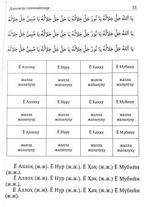

DHPayg'ambarga salovotlar va Allohning ismlari to'plami.
Bu kitob 'Daloilul hayrot' asarining ikkinchi qismi bo'lib, Payg'ambar (s.a.v.)ga bag'ishlangan salovotlar va Allohning 99 ismi (Asmaul husna)ni o'z ichiga oladi. Kitobda arabcha matnlar va ularning o'zbekcha transliteratsiyasi berilgan. Musulmonlar uchun zikr va ibodat qo'llanmasi sifatida xizmat qiladi.